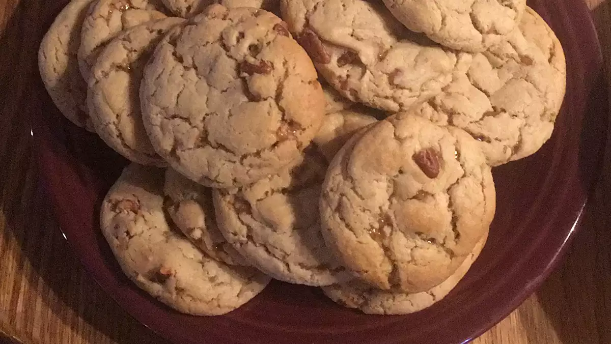

Cake Mix Cookies

Cake Mix Cookies
These cake mix cookies are yummy and simple to make with just 3 easy ingredients!
Ingredients
- 1 (18.25 counce) package white cake mix
- 1/2 cup vegetable oil
- 2 eggs
Steps
Step 1
- Preheat the oven to 350 degree F (175 degree C).
Step 2
- Stir cake mix,and eggs together in large bowl until it comes together as a dough>
Step 3
- Form dough into 1-inch balls and place 2 inches apart on ungreased baking sheets.
Step 4
- Bake in the preheated oven, about 6 to 10 minutes, depending on how soft you like your cookies. Cool cookies on the baking sheet or 5 minutes before stransfering them to a wire rack to cool compleatly.